Conjunto definido na proposta
A proposta identifica o braço, a unidade de controle e os acessórios incluídos. Fonte, cabos, ferramentas e documentação devem corresponder à versão fornecida.
Produtos / BRASSO
Braço robótico de bancada
Um projeto de robótica para aprender, experimentar e prototipar. O BRASSO reúne o estudo do movimento, da programação e de ferramentas intercambiáveis em uma plataforma de bancada.
A configuração e os itens de fornecimento são definidos na proposta. O software e as integrações em desenvolvimento estão identificados abaixo.

O projeto
O BRASSO foi pensado para aproximar conceitos de robótica da prática: juntas, coordenadas, lógica de programação e sequências de manipulação. A configuração de cada fornecimento deve considerar a aplicação do laboratório.
A proposta identifica o braço, a unidade de controle e os acessórios incluídos. Fonte, cabos, ferramentas e documentação devem corresponder à versão fornecida.
Impressão 3D e gravação a laser fazem parte das possibilidades de expansão em desenvolvimento. A inclusão depende da definição e validação do kit correspondente.
Software próprio para explorar programação, pontos e sequências. As versões de estudo permitem conhecer a interface e simular atividades antes da integração física.
Ferramentas
Garra, ventosa e suporte para caneta são referências do projeto. A ferramenta, seu acionamento e os acessórios devem ser identificados na configuração escolhida.
Para estudos de pegar, posicionar e soltar objetos. O tipo de acionamento e as características da garra dependem da versão e da ferramenta selecionadas.
Manipulação por sucção com o conjunto pneumático correspondente. Ventosa, bomba, válvula e tubulação devem compor a configuração da aplicação.
Uma referência para explorar trajetórias, coordenadas, escrita e desenho. A seleção do suporte deve considerar a caneta e a superfície usadas.
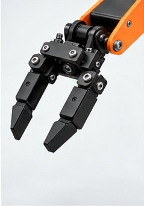
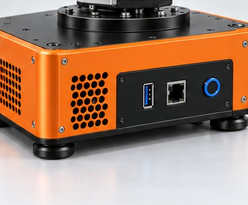
Aprender e prototipar
O projeto permite planejar atividades de cinemática, movimentação por juntas, sistemas de coordenadas e rotinas de pegar e soltar. São temas para escolas, cursos técnicos, universidades e laboratórios de prototipagem.
A documentação técnica disponível inclui guias em português. Materiais didáticos, treinamento e manuais do conjunto devem ser definidos conforme a versão e a aplicação.

Software próprio · em desenvolvimento
As versões de desenvolvimento reúnem programação por blocos, um subconjunto seguro de Python, pontos, sequências e diagnóstico. O modo demonstração permite explorar esses conceitos sem conectar um robô.
Telas de juntas e movimento, criação de pontos e organização de sequências, com temas claro e escuro. Há um pacote de desenvolvimento compilado para Windows x64; sua integração com o equipamento depende da versão adotada.
Uma interface móvel para acompanhar o Core, consultar programas e explorar os painéis de controle. A arquitetura documentada usa o BRASSO Core em um computador.
Os testes registrados das versões de estudo cobrem software e simulação. O uso com o robô e suas ferramentas requer integração e validação física da configuração.
Imagens ilustrativas de interfaces em desenvolvimento.

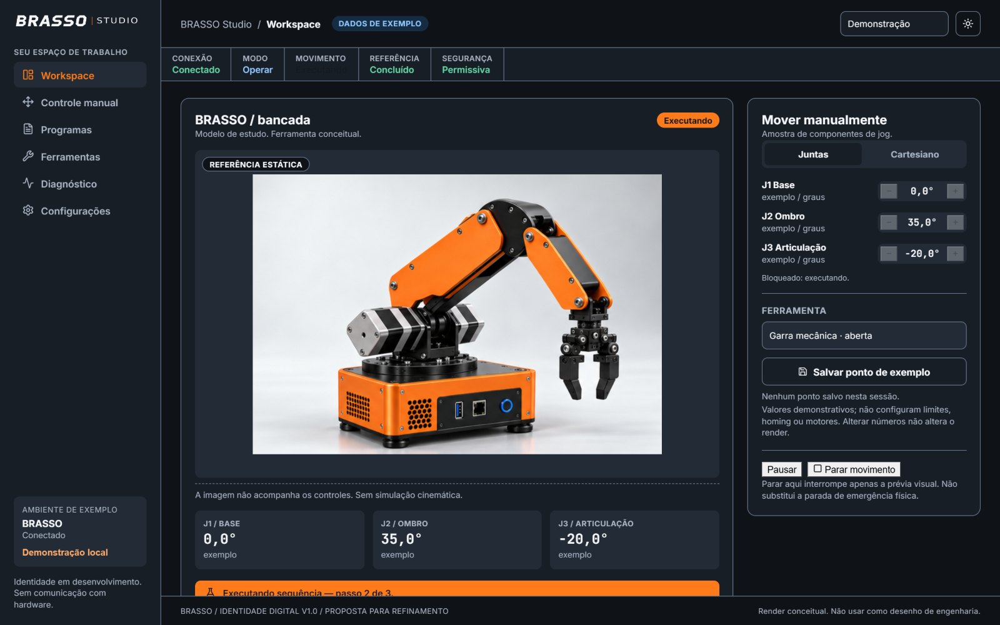
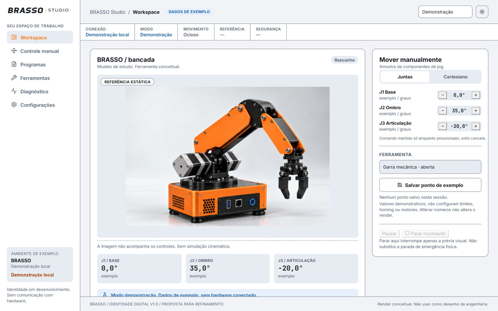
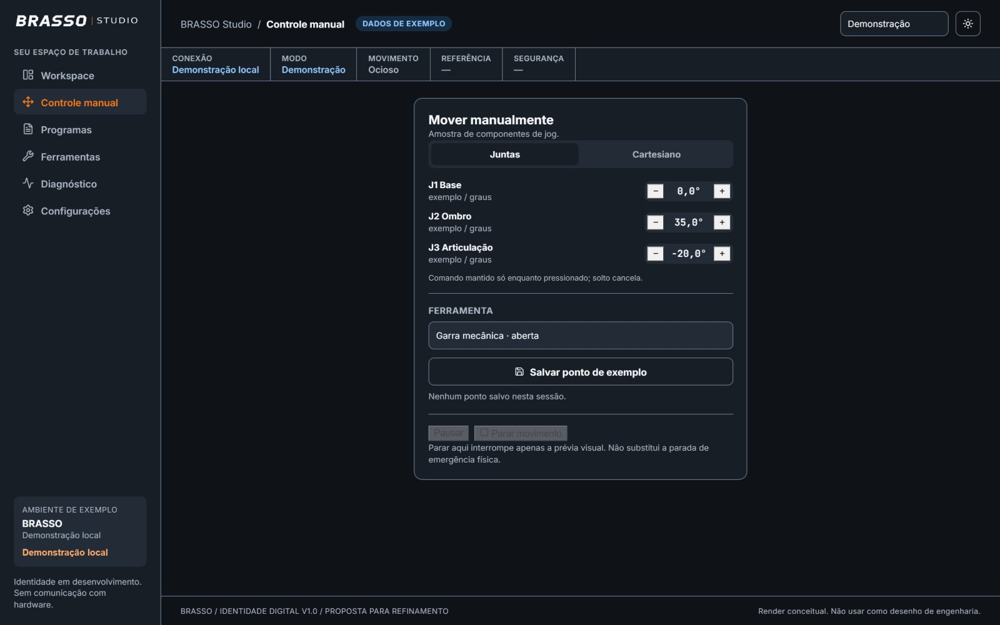
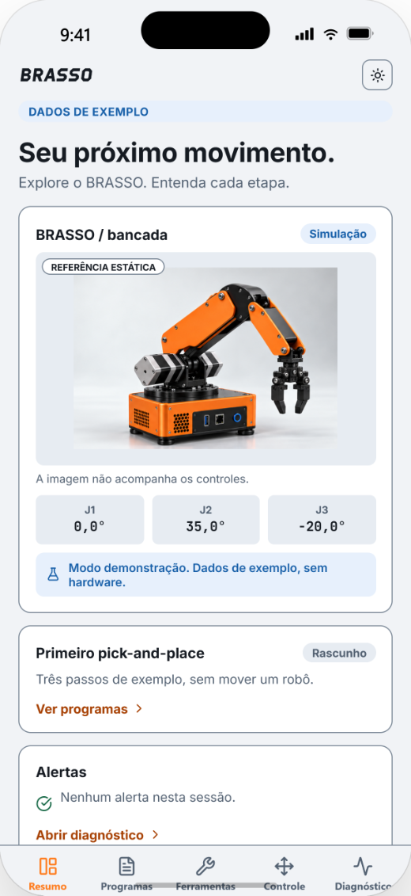
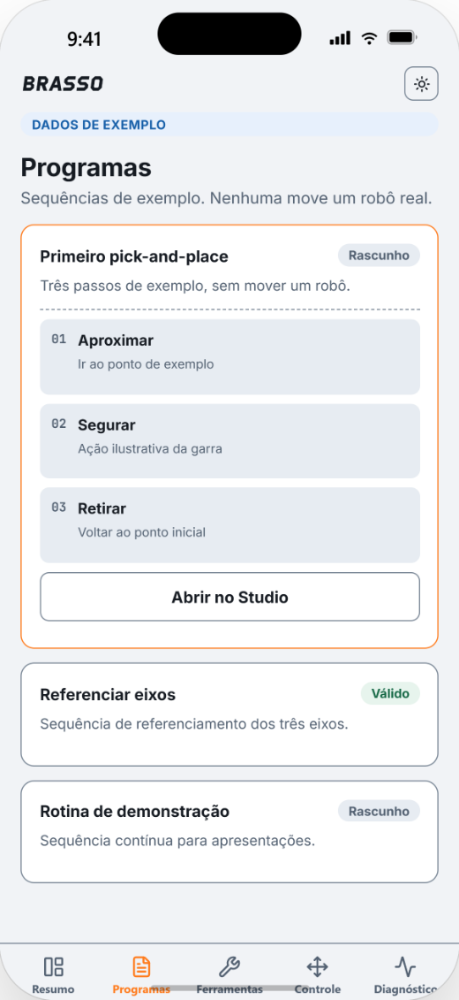
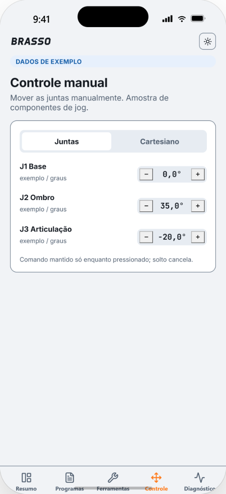
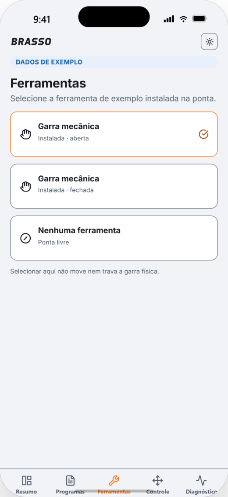
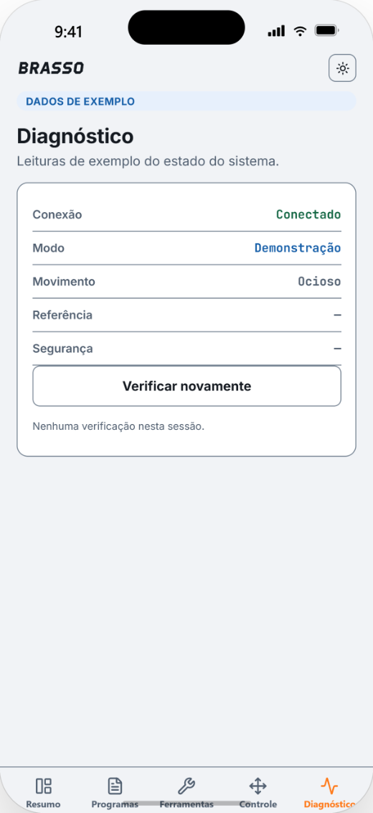
Eletrônica e integração
A eletrônica documentada do projeto contempla USB, UART, I²C, CAN e RS-485. A disponibilidade de cada interface no conjunto fornecido depende da revisão da unidade de controle e do firmware.
Wi-Fi e Bluetooth LE estão previstos na plataforma de controle e permanecem em desenvolvimento no firmware consultado. Integrações com periféricos são definidas e validadas por configuração.
Dúvidas
O modo demonstração permite conhecer a interface e os conceitos de movimento. Nas versões de estudo, a programação por blocos oferece um ponto de partida, e o subconjunto Python permite explorar rotinas em código.
A proposta deve listar a versão, as ferramentas, os acessórios, a documentação e os serviços incluídos. Itens opcionais e recursos em desenvolvimento são tratados separadamente.
A configuração precisa de instalação e validação apropriadas à aplicação. A parada por software não substitui a parada física nem os procedimentos de segurança do equipamento.
Conte à OLYA quais atividades pretende desenvolver, as ferramentas desejadas e os requisitos do laboratório. A equipe confirma a configuração, o conteúdo do fornecimento e as condições de suporte na proposta.
Converse com a OLYA sobre a configuração e a aplicação do BRASSO.